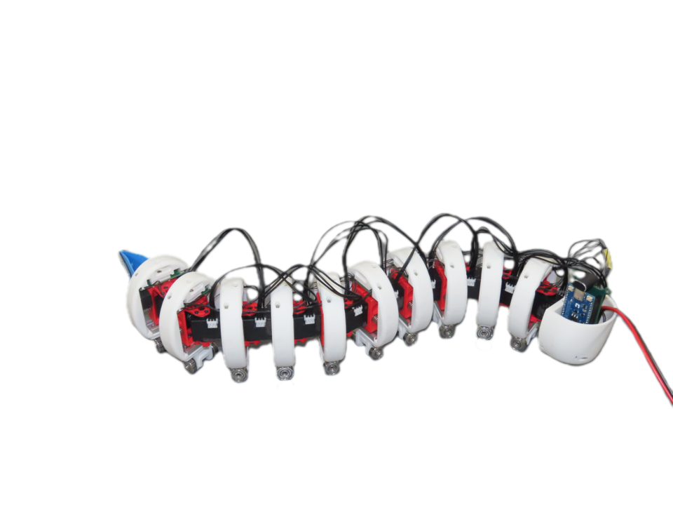
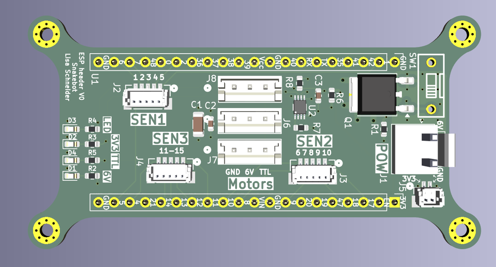
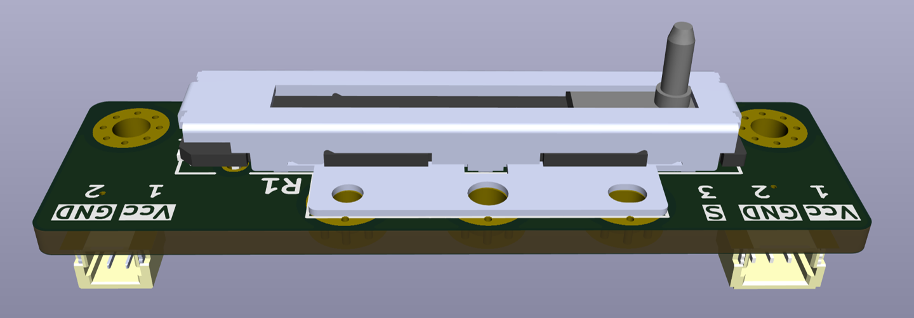
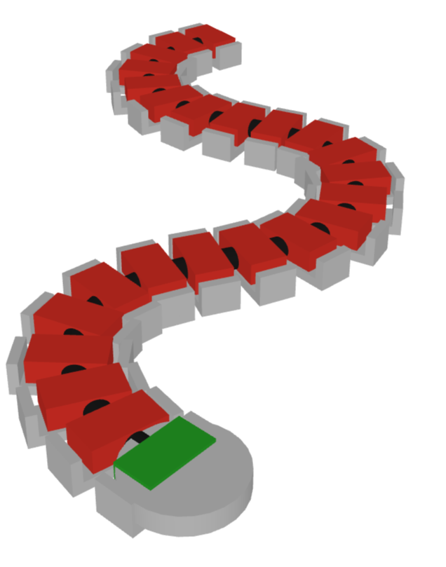

Undulatory Snake-like Robot
MSc Thesis · Tohoku University, Japan · 03/2026 – 09/2026

- Type
- Master thesis, neuromechanical robotics
- Where
- Tohoku University, Japan
- When
- March – September 2026
- My role
- Full-stack: mechanics, electronics, firmware, simulation, experiments
Overview
Design and Evaluation of an Undulatory Robot Driven by CPG-Based Control with Local Shear-Force Sensing. The thesis investigates how local sensory feedback can make undulatory (snake-like) locomotion adaptive. I designed and built a 10-segment planar robot with one passive degree of freedom per segment, controlled by central pattern generators and equipped with shear-force sensors in every segment.
What I did
- Mechanical design of the 10-segment planar robot with a passive DoF per segment in Fusion360.
- PCB design in KiCad of an ESP32 header board connecting up to 15 motors and analog sensors and a sensor board for each segment.
- Control of the robot using central pattern generators (CPGs) implemented in ESP-IDF.
- Simulation of the robot in MuJoCo using Python.
- Experiments: design, execution and evaluation of experiments studying adaptive behaviour in undulatory motion.
Results
Tools & Skills
Gallery


